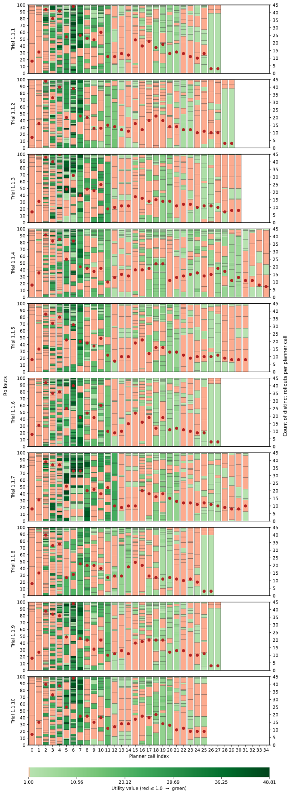
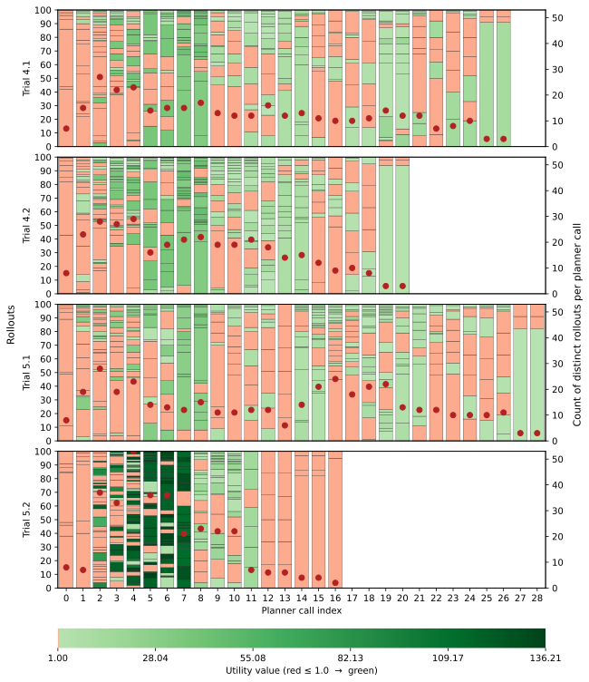

Acting and Planning with Hierarchical Operational Models on a Mobile Robot
Back to Project PageReal robot experiment 1.1.1
Real robot experiment 1.1.2
Real robot experiment 1.1.3
Real robot experiment 1.1.4
Real robot experiment 1.1.5
Real robot experiment 1.1.6
Real robot experiment 1.1.7
Real robot experiment 1.1.8
Real robot experiment 1.1.9
Real robot experiment 1.1.10
Simulation experiment 4.1
Simulation experiment 4.2
Simulation experiment 5.1
Simulation experiment 5.2

Real robot summary plots

Simulation summary plots